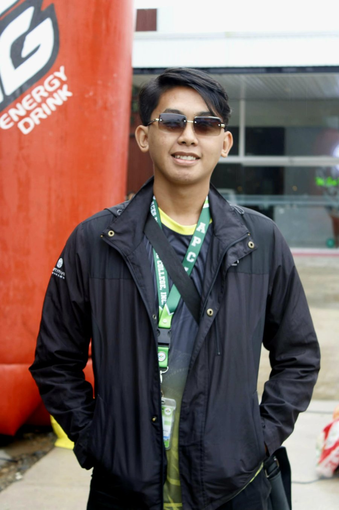
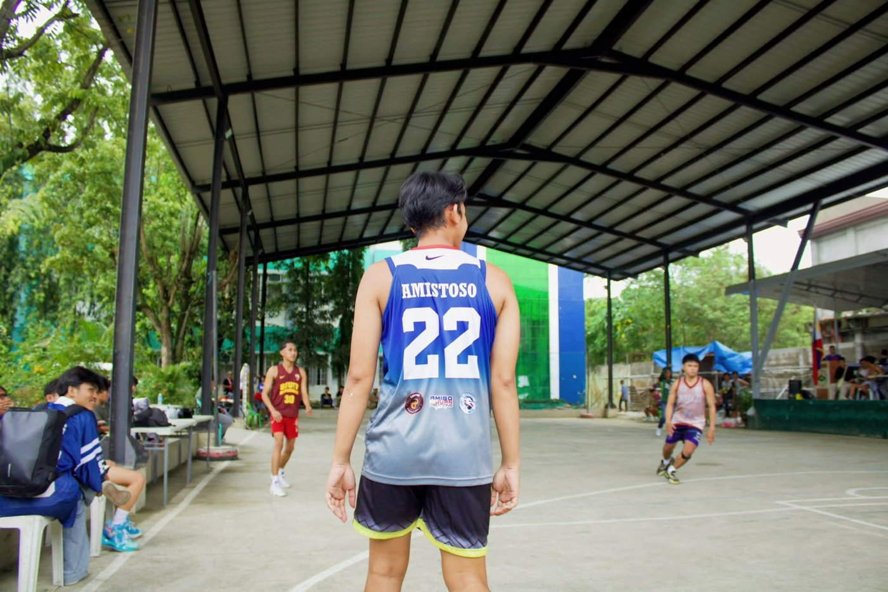
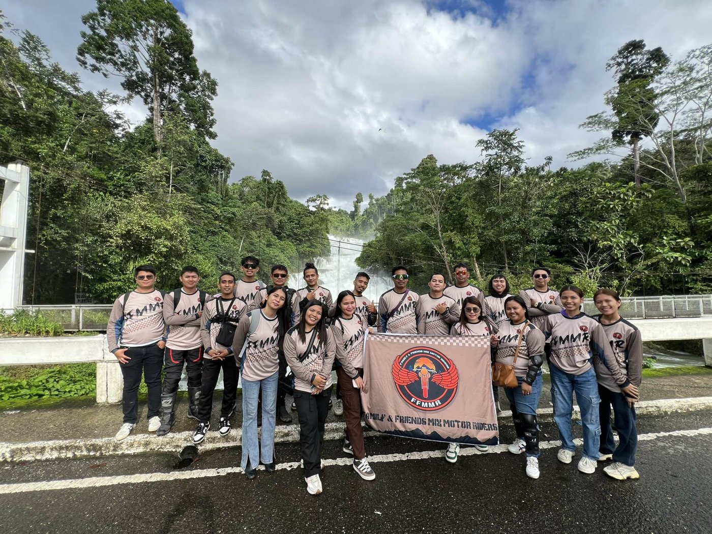

I’m a BSIT 2B student at Aces Polytechnic College who splits his time between the basketball court, the open road on two wheels, and the Dota 2 battlefield. I like fixing problems, running long distances, and winning, and I’m learning to code one bug at a time. This is my little corner of the internet.
“Play hard, ride far, fix everything, and never skip the breathing part.”
About meSee my work
Name: Joshua Maghanoy Amistoso
Course: BSIT 2B
Age: 20
Hometown: Panabo City, Davao del Norte, Philippines

My main sport. Jersey #22, always ready to run the court.
Group rides with my Family & Friends Mix Motor Riders crew, chasing waterfalls and long roads.
Dota 2 is my strategy playground. Yes, I have a championship.
Casual gaming and hanging out with friends online.
Pass all second-term subjects and get comfortable writing clean HTML, CSS, and code.
Graduate BSIT and build a portfolio of real projects.
Land a stable IT job, pay off every debt, and keep riding and playing hoops.
Still a beginner. Coding is my weak spot, but I’m building pages like this one and getting better each term.
I’m good at fixing problems: tracking down what’s wrong, trying fixes, and getting things running again.
Basic layout and color sense, enough to make a page look clean and on-theme.
Easy to talk to and great at ordering friends around, as long as someone else pays for the Jeepney… I mean, the JoyPay.
Years of team sports and group rides taught me to coordinate, call plays, and keep everyone together.
Good at basketball, minor in volleyball, and can jog up to 32 km.
Weaknesses (honestly): coding (working on it), breathing in water, and paying debts.
Font families, sizes, weights, styles, spacing, and text decoration, each shown next to its CSS code. Opens as its own website. ↗
ColorNamed colors, HEX, RGB, HSL, opacity, and gradients, plus a live HSL mixer to experiment with. Opens as its own website. ↗
| Code | Subject | Units | Days | Time | Instructor | Room |
|---|---|---|---|---|---|---|
| IT201 sec 1 | Data Structures and Algorithms | 3 | MT | 8:00 – 10:00 | Mr. Llanes | AL 2 |
| IT201 sec 2 | Data Structures and Algorithms | 3 | MT | 10:00 – 12:00 | Mr. Llanes | AL 2 |
| Elec 1 | Web Systems and Technologies 1 | 3 | MT | 1:00 – 3:00 | Mr. Guzarem | FV-307 |
| IT203 | Discrete Mathematics | 3 | MT | 3:00 – 5:00 | Ms. Lajos | FV-104 |
| IT202 | Introduction to Human Computer Interaction | 3 | MT | 5:30 – 7:30 | Ms. Regalado | AB-101 |
| GE 8 | The Contemporary World | 3 | MT | 7:30 – 9:30 | Mr. Sabenorio | AB 103 |
| PE3 | Physical Education 3 (Team Sports) | 2 | W | 1:00 – 5:00 | Mr. Recto | Dance Room |
Kape pampa highblood.
| ☕ Hot Coffee | |
|---|---|
| Espresso | ₱80 |
| Americano | ₱95 |
| Cappuccino | ₱120 |
| Caffè Latte | ₱125 |
| 🧊 Iced & Specials | |
|---|---|
| Iced Caramel Macchiato | ₱145 |
| Iced Mocha | ₱140 |
| Dota Dark Roast | ₱110 |
| Slam Dunk Frappe | ₱160 |
A photo page documenting our Family & Friends Mix Motor Riders trip to a waterfall. It shows image handling, layout, and storytelling.

Won the Big Day Dota 2 tournament through teamwork and strategy.
Took first place in the Sandurot basketball competition.
Placeholder: replace with your real academic award.
A multi-section personal website built with HTML and CSS to introduce me, show my skills, and present my class projects.
Getting the layout to fit phones, building tables, and writing clean code when coding is my weakness.
I learned how structure and styling work together, and that small steps, like in basketball, add up to a finished page.